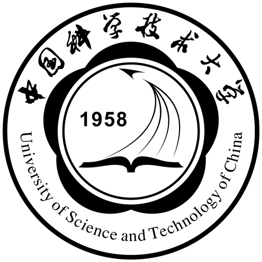
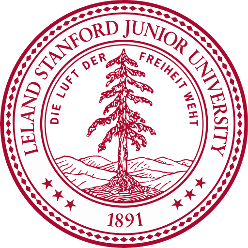
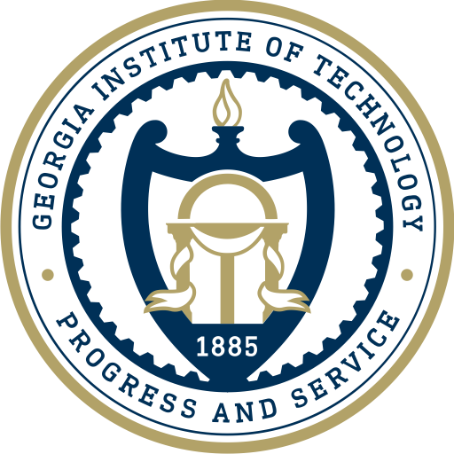
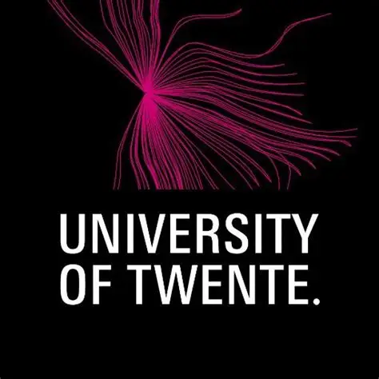
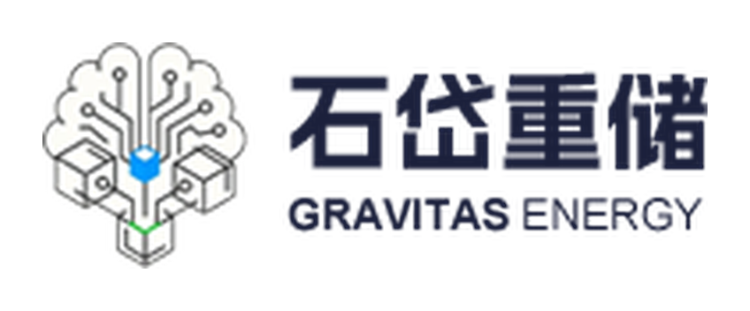

|
Tongyu (Tory) Wang | 王同宇
Curriculum Vitae
Undergraduate researcher in theoretical and applied mechanics, USTC
Home /
tongyuw@mail.ustc.edu.cn /
CV /
LinkedIn /
GitHub
Education
|

|
University of Science and Technology of China
Undergraduate Student
2023.09 - 2027.07
|
|

|
Stanford University
Visiting Researcher, BDML
2026.06 - 2026.08
UGVR program at the Biomimetics and Dexterous Manipulation Lab.
|
|

|
Georgia Institute of Technology
Remote Research Assistant, BM2 Lab
2026.04 - Present
|
|

|
University of Twente
Exchange Student
2025.07 - 2025.09
Visiting research exchange at the Physics of Fluids Lab.
|
|

|
Gravitas Energy
R&D Intern
2025.09 - Present
Research on slope-based gravity energy storage mechanisms.
|
Research
Shape-environment fusion for continuum-robot force sensing
Cosserat-rod contact modeling, constrained EKF/MAP estimation, and multimodal FBG and vision sensing.
DistalShift, Stanford BDML
Tian-Ao Ren*, Tongyu Wang*, Shixuan Zhao, Rohan Karunaratne, Tao Zhang, Rachel Thomasson, and Mark Cutkosky.
Compact 2-DoF add-on wrist that localizes tool reorientation near the endpoint.
project
Air-Gecko, Stanford BDML
Tao Zhang*, Tian-Ao Ren*, Tongyu Wang, EmJ Rennich, Xinai Zhang, Shixuan Zhao, Yimeng Qin, Huxin Gao, Jiewen Lai, Hongliang Ren, and Mark Cutkosky.
*equal contribution.
Variable-stiffness haptic controller for continuum manipulators, using positive pressure and gecko-inspired interlayer jamming.
manuscript
Sim2Real control for magnetic robotic intervention, USTC
ROS/Gazebo workflows, motion planning, SOFA continuum simulation, and reinforcement-learning transfer.
Active drops in surfactant systems, University of Twente
Basilisk CFD and model verification for high-Péclet-number transitions.
Patents
Yu Zhang, Tongyu Wang, Xiaohan Tang.
Heavy-Load Gravity Energy Storage System.
Chinese invention patent, granted 2026-06-26. ZL 2025 1 1746905.8.
Yu Zhang, Tongyu Wang, Xiaohan Tang.
Mountain-Based Gravity Energy Storage System.
Chinese invention patent application, substantive examination. 202511765995.5.
Yu Zhang, Tongyu Wang.
Gravity Energy Storage Transmission System and Gravity Energy Storage System.
Chinese utility model patent application, accepted 2025-12-02. 202522556214.3.
|